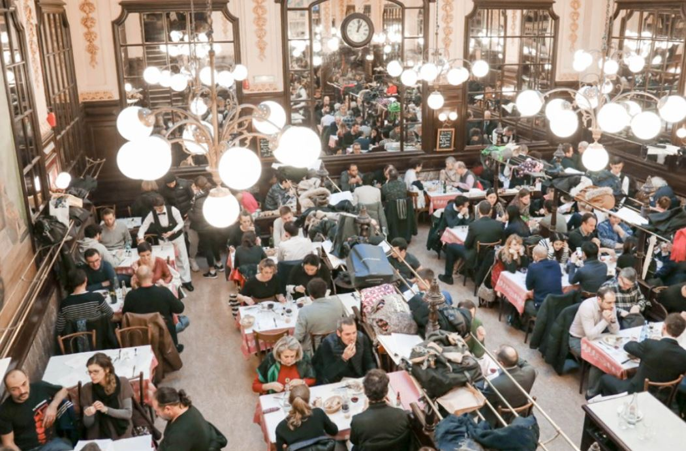

피에르 에르메(Fierre Herme) - 파리
바닐라 타르트의 원조인 디저트 가게. 한국의 뚱카롱과 다르게 마카롱이 납작하다!
평점 :
주소 : 18 rue Sainte-Croix-de-la-Bretonnerie, 75004 Paris
시설 : 규모가 작아 테이크아웃만 가능.
/ 바로 옆 골목에 위치한 카페에서 취식 가능
시간 : 11:00 - 20:00
전화번호 : +33 1 43 54 47 77
바닐라 타르트의 원조인 디저트 가게. 한국의 뚱카롱과 다르게 마카롱이 납작하다!
평점 :
주소 : 18 rue Sainte-Croix-de-la-Bretonnerie, 75004 Paris
시설 : 규모가 작아 테이크아웃만 가능.
/ 바로 옆 골목에 위치한 카페에서 취식 가능
시간 : 11:00 - 20:00
전화번호 : +33 1 43 54 47 77

샤르티에(Bouillon Chartier) - 파리
Chartier형제가 오래된 기차역에 오픈한 프랑스 요리 레스토랑.
평점 :

주소 : 7 Rue du Faubourg Montmartre, 75009 Paris
시설 : 좌석 ( 홀 중간이 명당 )
시간 : 월-일요일 오전11:30 - 자정
추천메뉴 : 프랑스식 햄버거와 스테이크 녹후추 소스 / 에샬롯과 스테이크 그리고 프렌치 감자튀김
르 쁘띠 올리비에(Le petit olivier) - 파리
작을 올리비에라는 뜻의 레스토랑.
평점 :
주소 : P82 Rue du Cherche-Midi, 75006 Paris
시설 : 메뉴판이 프랑스어로 되어있고, 주문도 프랑스어로! / 식당 내부에 피아노가 있음
시간 : 매일 오후12:00 - 15:00 / 19:30 - 22:30
추천메뉴 : 지중해풍 생선 마리네 샐러드 / 뵈프 부르기뇽과 파스타
오 쁘띠 그렉(Au P'tit Grec) - 파리
관광객 필수 맛집 크레페 전문점. 몽쥬약국 근처에 있어 약국쇼핑 후 인기코스
평점 :
주소 : 68 Rue Mouffetard, 75005 Paris
시설 : 바 형태의 테이블과 일반 테이블 몇 개가 있음. 주로 테이크아웃
시간 : 매일 11:00 - 00:30
전화번호 : +33 1 43 36 45 06
추천메뉴 : 햄 크레페 + 슈웹스(탄산음료)
관광객 필수 맛집 크레페 전문점. 몽쥬약국 근처에 있어 약국쇼핑 후 인기코스
평점 :
주소 : 68 Rue Mouffetard, 75005 Paris
시설 : 바 형태의 테이블과 일반 테이블 몇 개가 있음. 주로 테이크아웃
시간 : 매일 11:00 - 00:30
전화번호 : +33 1 43 36 45 06
추천메뉴 : 햄 크레페 + 슈웹스(탄산음료)
로벨 에 루이즈(Robert et Louise) - 파리 마레지구
가성비 최강 스테이크 전문점
평점 :
주소 : 64 Rue Vieille du Temple, 75003 Paris
시설 : 창가자리 마련 / 예약하고 가는 것 추천
시간 : 월요일 휴무 | 화요일/수요일 : 19:00 - 23:00 | 목요일/토요일 : 12:00 - 15:00 , 19:00 - 23:00
일요일 : 12:00 - 23:00
전화번호 : +36 1 42 78 55 89
추천메뉴 : 갈비살 스테이크, 티본 스테이크, 에스까르고
가성비 최강 스테이크 전문점
평점 :
주소 : 64 Rue Vieille du Temple, 75003 Paris
시설 : 창가자리 마련 / 예약하고 가는 것 추천
시간 : 월요일 휴무 | 화요일/수요일 : 19:00 - 23:00 | 목요일/토요일 : 12:00 - 15:00 , 19:00 - 23:00
일요일 : 12:00 - 23:00
전화번호 : +36 1 42 78 55 89
추천메뉴 : 갈비살 스테이크, 티본 스테이크, 에스까르고
피제리아 포포라레(pizzeria popolare) - 파리
파리에서 최강 핫플레이스인 피자집. 긴 줄은 기본!
평점 :
주소 : 111 Rue Réaumur, 75002 Paris
시설 : 수많은 술병들로 꾸며진 벽면과 스타일리시한 레스토랑 인테리어가 포인트
시간 : 월-금 : 11:45 - 14:15, 19:00 - 22:30 | 주말 : 12:00 - 15:15, 19:00 - 22:30
전화번호 : +33 1 42 21 30 91
추천메뉴 : 5유로밖에 안 하는 이탈리아 나폴리 피자
카페 마를렛(Cafe Marlette) - 파리
파리지앵들 사이에서 한창 핫한 브런치 카페. 건강에 좋은 재료들로만 만든 브런치.
평점 :
주소 : 63 rue du Faubourg Poissonnière, 75009 Paris
시설 : 깔끔하고 안락한 인테리어. 베이킹 재료 판매
시간 : 평일 : 08:30 - 19:00 | 주말 : 09:30 - 19:00
전화번호 : +33 1 42 29 62 76
추천메뉴 : 아보카도나 연어가 잔뜩 들어간 샐러드 메뉴